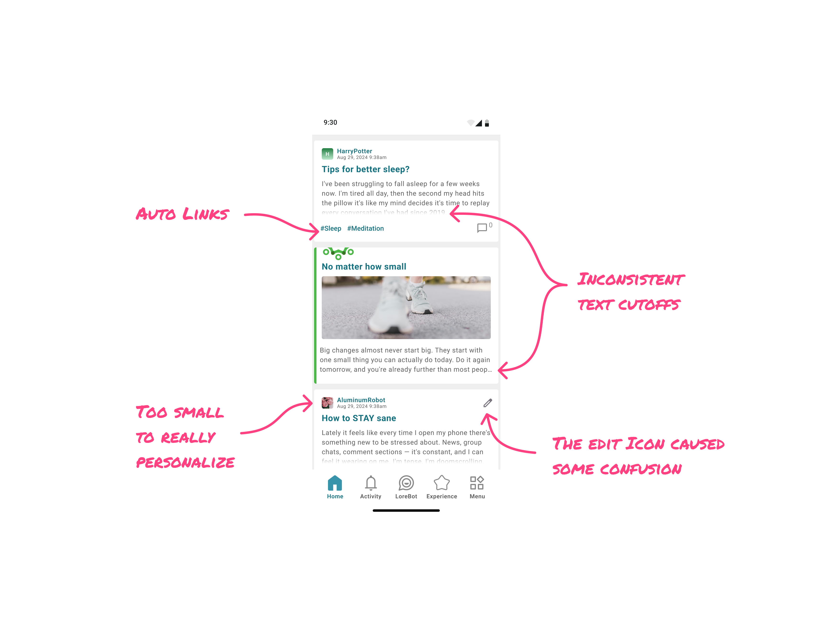
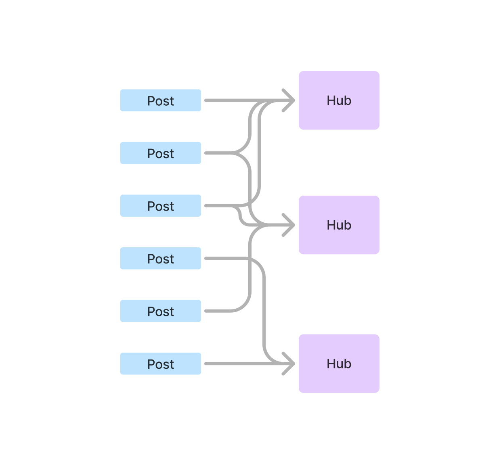
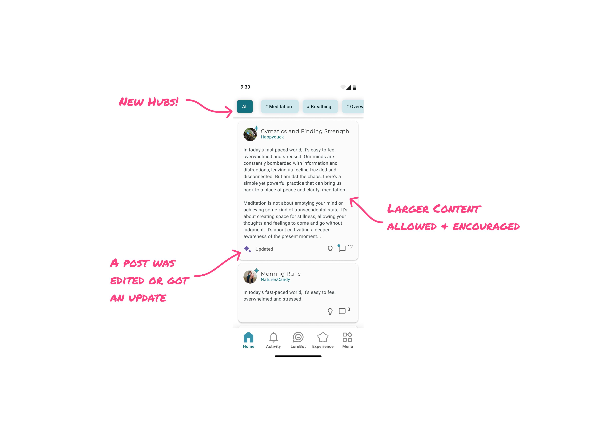

Designing for Connection at Lore
Lore only makes money when people use healthcare less. Its theory of change: reflection and community change beliefs and identity, which change behavior, which reduces inflammation and healthcare use. Community does that work by creating a space where people can be authentic and have their ideas challenged, helping people actually evaluate their own situation rather than just perform for an audience. Belief doesn’t shift by watching — real catalysts require someone to take an action, not just observe one.
I focused on the community half of the product. When I joined, the goal for it was “flourishing community” — closer to a mood than a spec. I replaced it with something I could design against: community happens when people are in proximity to each other because of a shared purpose or characteristic. Every story that follows tests that definition.
Story 1: Designing for Discovery — From Feed to Hubs
A community running on fumes
By the time I joined, the Lore community had been trending down for a while — not a collapse, a steady decline. It was a small community to start, and it had leaned on a company mandate that every employee post weekly. Once that requirement was relaxed, the numbers kept sliding.
Autolinking: the tool I inherited
The squad had already invested heavily in autolinking — an ML process that auto-tagged every post with one to three hashtags, giving it a one-click search into related content. It wasn’t built around my proximity definition; it already existed. My job was to figure out where it belonged inside a real vision of community, not the other way around.
Real momentum, real limits
I looked closely at what was already working organically: a fasting-and-workout community built on weekly check-in posts, real camaraderie. But it depended entirely on super users manually pulling other members in — not something a new or quiet user could stumble into.
Autolinking itself wasn’t landing, either. Click-through on hashtags was low, tags were often called inaccurate, and — since tagging was automatic — involuntary: people saw their posts labeled with topics they hadn’t chosen.
(I’d asked to talk to customers directly and was turned down, so this leaned on observed behavior rather than direct feedback — something that changed later once I started running Lyssna tests.)
Diagnosing it in a workshop
I ran a design workshop with the squad. Two things came out of it: real UI complaints, and — more fundamentally — the product needed to feel like it was building communities, not serving scrollable content.

Channels vs. hubs: the real fork
Channels — Discord- or Reddit-style — were a pattern I’d seen work elsewhere. Two things ruled them out: building them meant a complete backend overhaul, not feasible on top of the autolinking investment; and channels need someone to create and maintain them — if that was our team, we’d become the bottleneck deciding what communities got to exist.
So I suggested hubs: same sorting function as channels, built directly on the autolinking already in place. Once enough posts clustered around a topic, the system auto-generated a new hub, and our data/ML squad could orchestrate which ones surfaced. No backend overhaul, and the system stayed emergent instead of something we had to seed and maintain by hand.

Five to start, then personalized
Every user got five hubs out of the gate — not the full list, which ran 25 to 40 deep. Showing all of them would have meant asking someone to pick from a wall of options before they’d even seen what the community was about. Five was enough to signal direction without overwhelming anyone, and it shifted with each user’s engagement over time, giving us a level of personalization without needing to build a real recommendation system.

That was the real unlock: direction. Somewhere to go, and a decision to make about where.
What worked
Super users adopted hubs almost immediately. Posts grouped well enough that a hub visibly read as “a genuinely good topic” — setting Lore apart from typical social media groups. Hubs pulled real traffic out of the gate: 15 to 30 unique users a day.
Scale, for context: Lore had 5,000+ active accounts total, but only ~400 active in the community. The app’s core draw was getting paid to reflect with an AI chatbot — the community was never the growth engine, just where connection and depth happened. Against that base of 400, hubs settled into 25–40 active topics, with about 10 popular enough to hit that daily traffic — a real share of a small community, not a rounding error.
What didn’t
The traffic didn’t hold. Unique daily users drifted down to ~5, even for the most popular hubs. This wasn’t a visibility problem — people engaged fine when there was something to engage with. It was supply: the community was producing 4 to 8 posts a week, but ~130 comments a week — people were happy to reply, just not to originate.
I’d kept an “All” hub as a catch-all, and it became the default most people lived in. To test whether All itself was the problem, I removed it — users landed on their last-engaged hub, or the most trending one. The numbers only ticked up slightly. People were sticky to wherever they landed, not to All specifically. It wasn’t a findability problem. There just wasn’t enough content anywhere to pull people past their one default hub.
Learning
Categorization can’t manufacture content it doesn’t have. Hubs worked exactly as designed — they organized what existed — but a small, still-declining community wasn’t producing enough posts to sustain more than one active space, and people go where they land, not where the structure points them. The real problem wasn’t discovery. It was supply: how do you get people to actually create more. That’s where the next round of experiments picked up.